A palette icon sits next to the bell on every page, and one tap opens the theme picker. To make room on phones, the location chip leaves the header. Below are two ways to handle the location, shown on the real app.
My pick: Way B. Home already shows "Places within 15 km of Mangaluru · Change" right under the headline, so the header chip was a duplicate there. Categories gets the same line. The location then appears once per screen, always in the same place, and nothing new is added.
On phones, today's header chip only shows on Home, Categories and List your business. Search, Offers and business pages already keep the location elsewhere, so they only gain the palette icon.
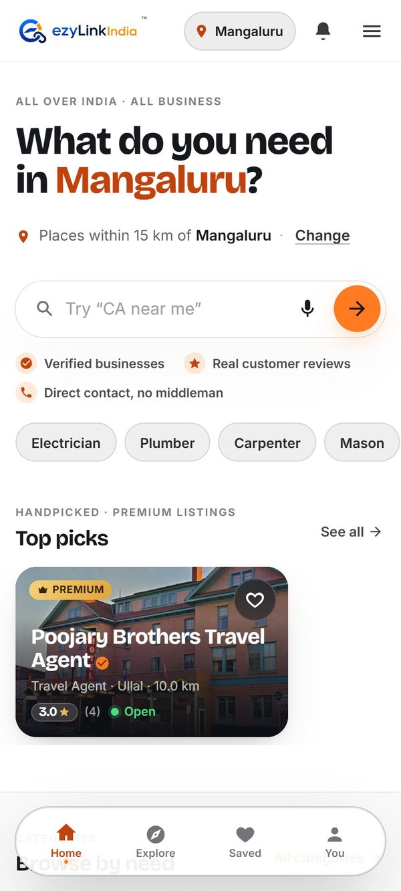
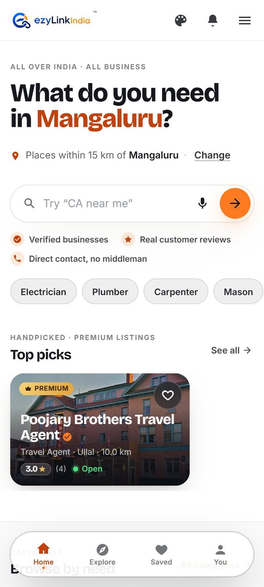
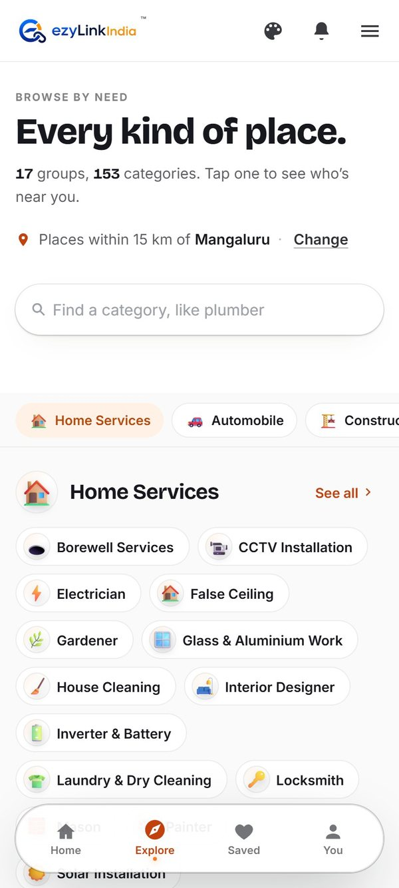
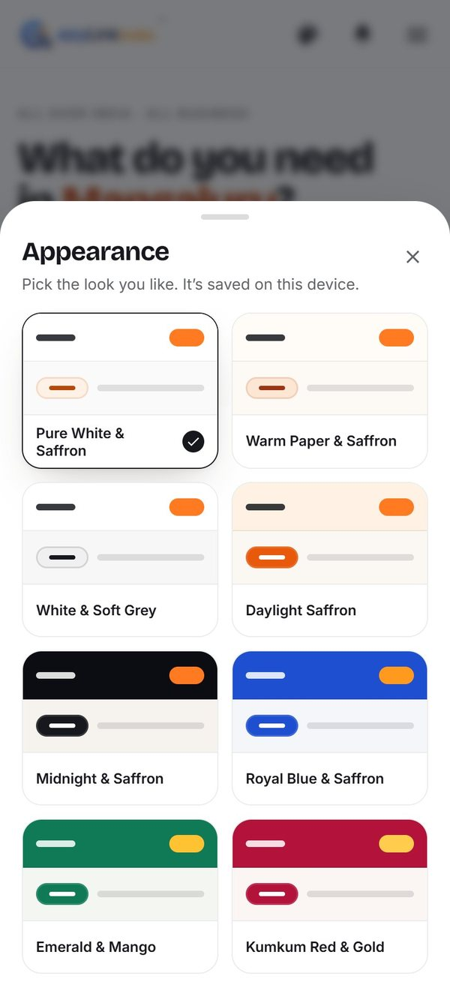
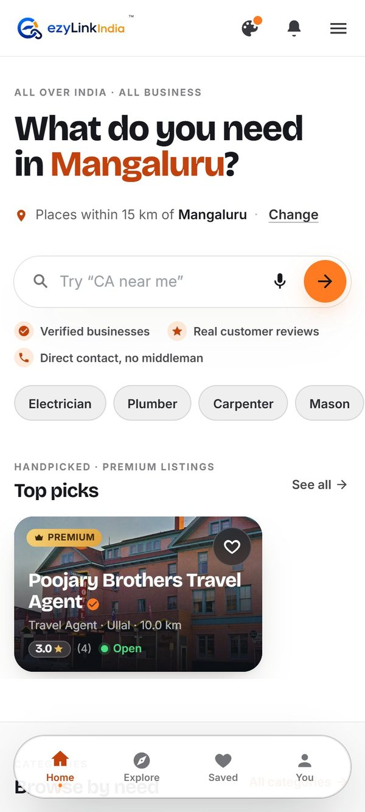
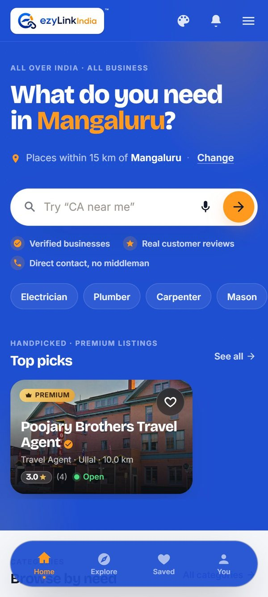
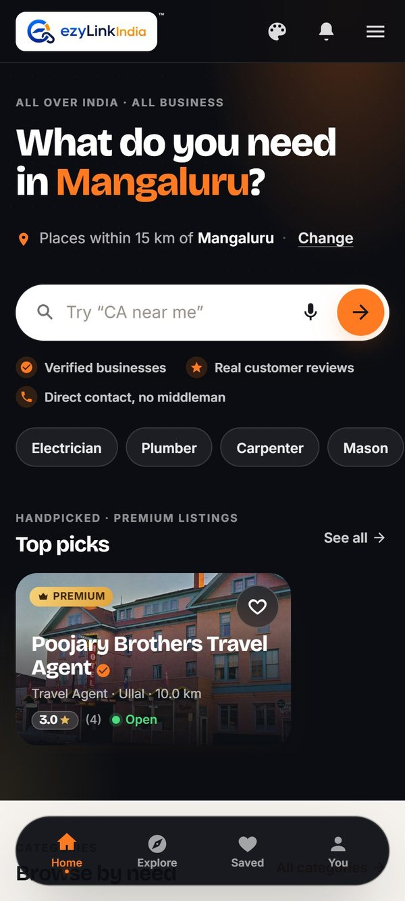
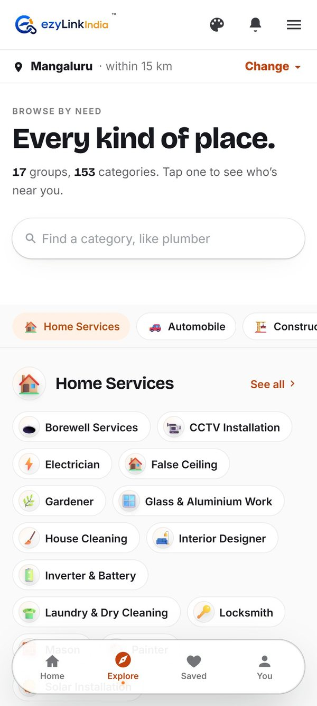
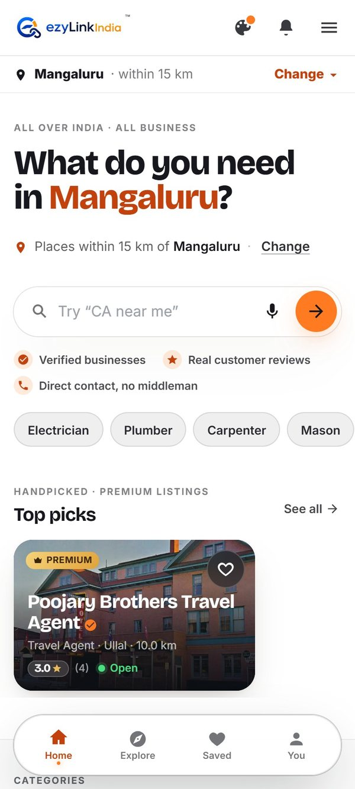
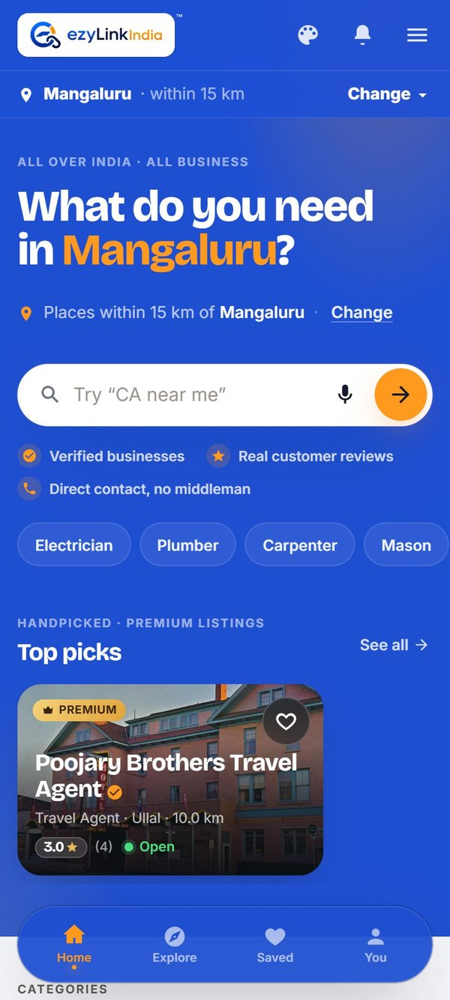
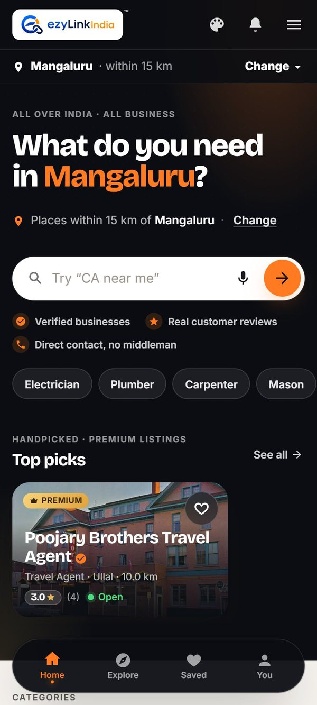
Search already has its own location pin next to the search box, so it only gains the palette icon. On desktop there's room for everything, so the location chip stays in the header and the palette sits beside the bell.
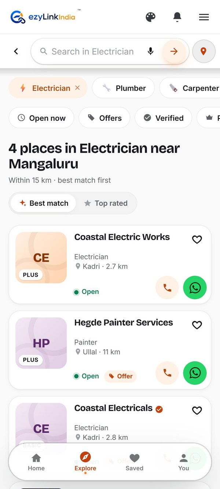
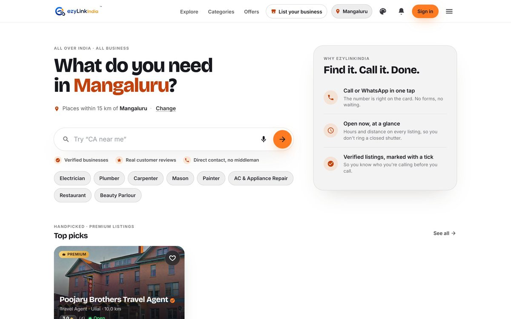
Screens were taken from the live ezylinkindia.com, with the palette icon and location changes added in the browser for the mockup only. Nothing in the app has changed yet. The Android app would get the same header. Tap any screen to see it full size. Back to all four options.